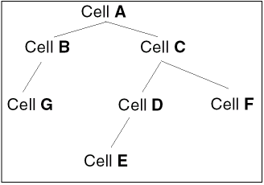

4
Netlist Import Using Spice In
This chapter covers the following:
- Introduction to Spice In
- Using Spice In
- Inherited Connections Supported
- Creating a Spice In Parameter File
- Creating a Device-Map File
- Handling Parameters
- Handling Terminal Order for Sub-Circuits
Introduction to Spice In
Virtuoso® Spice In imports CDL, HSpice, Spectre, and SPICE netlists into the OpenAccess database by generating either Virtuoso Schematic or Virtuoso Netlist views. It also creates Virtuoso Symbol views wherever required.
The figure below shows the types of netlists that can be imported using Spice In and the types of output views generated.
The Spice In examples are present at the following location: <install_dir>/tools/dfII/samples/Spice In. For more information on examples of Spice In, refer the readme.txt file present at the above mentioned location.
Features of Spice In
General Features
- Generates a Virtuoso Schematic or a Virtuoso Netlist view.
-
Imports sub-circuit level parameters of a sub-circuit as Component Description Format (CDF) Component Parameters at the cell level. For more information about CDF, see the Component Description Format User Guide.
For more information about how Spice In imports sub-circuit level parameters, see Handling Parameters. -
Uses terminal order (
termOrder) from the CDF Simulation Information of the specified simulator for creating connections between the nets of an instance and the terminals of the master cell of the instance.
For more information about how and where Spice In creates terminal order, see Handling Terminal Order for Sub-Circuits. -
Saves the terminals of a sub-circuit as
termOrderin the CDF Simulation Information of the specified simulator. - Maps devices from model libraries to a user PDK.
- Enhances placed and routed schematics by using the Analog Schematic Generation feature. For more information on ASG, see Analog Schematic Generation Tab.
Spice/Spectre
-
Imports global parameters as design variables at the top-cell level. The design variables can be used in pre-processing of the design before simulating it using Virtuoso® Analog Design Environment (ADE). For more information about ADE, see Virtuoso ADE L User Guide or Virtuoso ADE XL User Guide.
For more information about how Spice In imports the global parameters, see Handling Parameters.
Flows Using Spice In
Spice In aids you in a number of design and simulation flows, such as:
- Designing and simulating analog circuits using Virtuoso® Schematic Editor (VSE) and Virtuoso ADE
- Creating Virtuoso Layout views using Virtuoso® Layout Suite (VLS), and subsequently running layout-versus-schematic (LVS) using LVS tools.
The following figure shows the flows that use Spice In.
Licensing in Spice In
Spice In searches for the following licenses in the specified order and checks out one of them:
-
1 license of Virtuoso® Schematic Editor L
For more information about the Virtuoso Schematic Editor L, see the Virtuoso Schematic Editor User Guide -
1 license of Virtuoso® Schematic Editor XL
For more information about the Virtuoso Schematic Editor XL, see the Virtuoso Schematic Editor User Guide -
1 license of Virtuoso® Layout Suite L
For more information about the Virtuoso Layout Suite L, see the Virtuoso Layout Suite L User Guide -
1 license of Virtuoso® Layout Suite XL
For more information about the Virtuoso Layout Suite XL, see the Virtuoso Layout Suite XL User Guide. -
4 tokens of Virtuoso® Layout Suite GXL
For more information about the Virtuoso Layout Suite GXL, see the Virtuoso Layout Suite GXL Reference.
* envSetVal("spiceIn" "asgMode" 'boolean t)
However, in the Spice In command line the ASG option is enabled by default.
The -noasg argument can be used to run Spice In without ASG.Spice In searches for the following licenses in the specified order and checks out one of them:
-
1 license of Virtuoso® Schematic Editor L
For more information about the Virtuoso Schematic Editor L, see the Virtuoso Schematic Editor User Guide -
1 license of Virtuoso® Schematic Editor XL
For more information about the Virtuoso Schematic Editor XL, see the Virtuoso Schematic Editor User Guide -
1 license of Virtuoso® Layout Suite XL
For more information about the Virtuoso Layout Suite XL, see the Virtuoso Layout Suite XL User Guide. - 4 tokens of Virtuoso® Layout Suite GXL
For more information about the Virtuoso Layout Suite GXL, see the Virtuoso Layout Suite GXL Reference.
For more information about the Virtuoso Layout Suite EXL, see the Virtuoso Layout Suite EXL User Guide.
For more information about the Virtuoso Layout Suite EAD, see the Virtuoso Electrically Aware Design Flow Guide.
Affects of Control Commands during Import
There are various control commands, such as *.scale, which have an affect during import of cdl netlist.
*.scale Command
-
If the
*.scalecommand is present in netlist with or without themicronargument, the values are expanded during parsing of netlist.
Even if the*.scalecommand is not present in the netist during parsing will have the same effect.
All these conditions are illustrated below:-
The
*.scalecommand is present without an argument*.BIPOLAR
*.CAPVAL
*.RESVAL
*.DIOAREA
*.DIOPERI
*.scale
.subckt topCell a b c d
C1 a b 20n M=2 $[CX]
D1 c d DI AREA=10n PJ=5p M=9
Q1 c a d nz M=11 $EA=17f $L=9n $w=8p
R1 d a 10M M=4 $.MODEL=rx $w=19p $L=11n
M1 d c a b px W=15n L=17f M=2
J1 a b c nx W=5p L=10f
.END
-
The
*.scalecommand is present with themicronargument*.BIPOLAR
*.CAPVAL
*.RESVAL
*.DIOAREA
*.DIOPERI
*.scale micron
.subckt topCell a b c d
C1 a b 20n M=2 $[CX]
D1 c d DI AREA=10n PJ=5p M=9
Q1 c a d nz M=11 $EA=17f $L=9n $w=8p
R1 d a 10M M=4 $.MODEL=rx $w=19p $L=11n
M1 d c a b px W=15n L=17f M=2
J1 a b c nx W=5p L=10f
.END
-
The
*.scalecommand is not present*.BIPOLAR
*.CAPVAL
*.RESVAL
*.DIOAREA
*.DIOPERI
.subckt topCell a b c d
C1 a b 20n M=2 $[CX]
D1 c d DI AREA=10n PJ=5p M=9
Q1 c a d nz M=11 $EA=17f $L=9n $w=8p
R1 d a 10M M=4 $.MODEL=rx $w=19p $L=11n
M1 d c a b px W=15n L=17f M=2
J1 a b c nx W=5p L=10f
.END
-
The
Based on the above conditions the parameter values are expanded as:
C1 a b 20n M=2 $[CX] * 2e-08 , 2
D1 c d DI AREA=10n PJ=5p M=9 * 1e-08, 5e-12, 9
Q1 c a d nz M=11 $EA=17f $L=9n $w=8p * 11, 1.7e-14, 9e-09, 8e-12
R1 d a 10M M=4 $.MODEL=rx $w=19p $L=11n * 1e+07, 4, 1.9e-11, 1.1e-08
M1 d c a b px W=15n L=17f M=2 * 1.5e-08, 1.7e-14, 2
J1 a b c nx W=5p L=10f * 5e-12, 1e-14
.END
-
If the
*.scale meteris present in netlist then only Length and Width parameters are multiplied by1e+06. There is no impact on other parameters. For example:*.BIPOLAR
*.CAPVAL
*.RESVAL
*.DIOAREA
*.DIOPERI
*.scale meter
.subckt topCell a b c d
Using Spice In
Spice In can be run using either the
Running Spice In from GUI
Use the Spice In GUI to specify the inputs and the desired outputs for the design import. The following sections explain how to launch and use the GUI.
- Launching the Spice In GUI
- Working with the Spice In GUI
- Customizing the Spice In Environment
- Running Spice In
Launching the Spice In GUI
Spice In can be launched from Virtuoso® Design Environment workbenches: virtuoso and layout.
To launch the Spice In GUI, perform the following steps:
- Open the CIW of the aforementioned Virtuoso workbenches.
-
Select File — Import — Spice. The Virtuoso® Spice In form is displayed.
Working with the Spice In GUI
You can use the Spice In GUI to load an existing parameter file as well as modify a parameter file. A parameter file, written in SKILL® language, is a list of parameters specified as name-value pairs. The parameter file is used to save values for the various fields in the form, thereby allowing the values used in one session to be reused in another session. For more information about the parameter file, see Creating a Spice In Parameter File and Mapping Parameter File Options with the Spice In GUI Options.
Loading a Parameter File
You can load an existing parameter file, by using the Load button at the bottom of the Spice In form as shown in the figure.

To load a parameter file, perform the following steps:
-
Click Load.
The Load SpiceIn Parameter File window is displayed.
- Browse to the location where the parameter file is located.
-
Select the parameter file and click Open. By default, the parameter file is displayed as spiceIn.params.
The values of the fields on all the tabs of the Virtuoso Spice In form are updated with the values from the parameter file. However, if any errors or warnings are displayed in CIW, correct them before proceeding further.
In addition to the option name-value pairs, the Spice In parameter file contains the name of the Schematic Generation options parameter file. Therefore, when you click the Load button on the Input tab, the values of the fields in the Schematic Generation tab are updated from the Schematic Generation parameter file.
Saving an Option to a Parameter File
You can also save the values in various fields in GUI form to a parameter file. To save the values, perform the following steps:
- Specify values for one or more GUI fields, and set the options as desired.
-
Click Save. The Save SpiceIn Parameters window is displayed.
- Specify the name of a file in which you want to save the GUI settings. Spice In creates the file if it does not exist in your current working directory.
-
Click Save.
The values of the GUI fields for which the default values have been updated are saved to the specified parameter file. The Schematic Generation parameters are saved in a separate file schOpts_<filename>.
The other options in the Spice In GUI form are grouped into the following tabs:
Input Tab
The following sections explain the tasks you can achieve using the options on the Input tab.
Specifying the Netlist File
In the Netlist File field, specify the netlist you want to import. This is a mandatory field.
If the netlist file is not located in the current working directory, you can either manually specify the absolute or relative path of the file or search for the file by using the Ellipses (...) button.
-
Click the Ellipses (...) button. The Netlist File window appears.
- Browse to the location where the netlist file is located.
-
Select the netlist file and click either Open or Apply.
This would close the Netlist File window and the name of the netlist file along with its absolute path appears in the Netlist File field.
-
Click the Ellipses (...) button. The Netlist File window appears.
Specifying the Language of the Netlist File
Select the appropriate Netlist Language option to specify the language of the netlist. You can select from the options CDL, HSpice, Spectre, and SPICE.
Specifying the Top Cell
Top Cell specifies the name of the top cell of the design hierarchy to be imported. The top cell concept for a CDL netlist is different from that for HSpice, Spectre, and SPICE netlists.
-
For a CDL Netlist
CDL netlists always have instances bound to asubcktstatement. Therefore, the concept of top cell and “loose” instances, as applicable to HSpice, Spectre, and SPICE netlists, does not hold true for a CDL netlist. The Top Cell field will not be available in GUI for a CDL netlist. -
For HSpice, Spectre, and SPICE Netlists
Specify the top cell as the top-level sub-circuit name where all the “loose” instances will be placed. This is illustrated through the example below.
For example, consider the following snippet of the Spectre netlist:In this netlist, the “loose” instances,I8,R1,I2,V2, are not contained within anysubckt-endsstatement. These loose instances are ought to be present in a top cell named "ampTest". Top cell is a container cellview (OA database) for all loose instances. All loose instances are a part of a cellview. If there are no global nets, no global parameters, and no loose instances in a cellview, then no topcell will be created.
You can specify this top cell value in the Top Cell field if you are importing an HSpice, Spectre, or SPICE netlist.
Default Value: top
Importing the Sub Circuits List
Import sub circuits list is a list of sub-circuits that needs to be completely imported along with their hierarchy. The sub-circuit list is separated by a white space. For example: amplifier control vsource.
-
For a CDL Netlist
In the case a CDL netlist, the input netlist might comprise of multiple levels of design hierarchies. In that case, specify the top cell of the part of the design hierarchy you want to import. Consider the hierarchy depicted in the following figure:
If you want to translate cellsC,D,E, andFbut notAandB, specify cellCas one of the entry in the import sub-circuit list. If you want to translate cellsBandCbut notA, specify cellsBandCas import sub-circuit list entries.
Pin direction for CDL netlist can be set in the following ways:-
The
*.PININFOcontrol command is used to specify pin type*.PININFO signalName:pinTypewhere,pinTypespecifies one of the following pin types:
i or I – input pin
o or O – output pin
b or B – input/output (bidirectional)
p or P – power
g or G – ground
Example
Below is the example of Pin direction for CDL netlist:
.subckt inv Y A
*.PININFO Y:O A:I
M1 VDD A Y vdd p w=10u l=2u
M0 Y A gnd gnd N w=5u l=2u
.ends inv -
A slash (/) character in
.subcktstatements distinguishes the output ports (before the slash) and the input ports (after the slash). In the example below, portsaandbare output ports, and portsdandeare input ports for cellxxx.
.subckt xxx a b / d e -
The
-
For HSpice, Spectre, and SPICE Netlists
To import all loose instances and/or more hierarchies, enter the name of the top cell and the sub-circuit names in the Import Sub-Circuits List field. If the top cell name is not specified in the Import Sub-Circuits List field, none of the loose instances and their masters, if any, will be imported.
If you do not specify any value in the Import Sub-circuits List field, all the sub-circuits in the netlist will be imported. However, if the name specified in the Import Sub-circuits List field is not a sub-circuit in the netlist, a warning message will be displayed. Also, if all the specified names are invalid, an error message will be displayed and Spice In will abort.While importing sub-circuit Pins, if sub-circuit symbol is present in the output library then the sub-circuit pins directions are created by seeing direction of sub-circuit symbol. However, if sub-circuit pins are not present in the output directory then sub-circuit pins directions are created as bidirectional.
Specifying the Reference Libraries
In the Reference Library List field, specify all the reference libraries. The names of reference libraries should be separated by blank spaces. Ensure that the specified reference library names are defined in the cds.lib file. This is a mandatory field.
During the netlist import, Spice In searches the specified libraries sequentially for the master cellview definitions for primitive devices. Incase of CDL, the sub-circuits with box definition (box elements), the master will be searched in the given reference libraries.
- cell name should match and a symbol view must exist.
- terminal count should match the required number of terminals for a device.
- termOrder information must be present either in siminfo section or device mapping file. There is no concept of default termOrder of primitives.
- pins specified in the termOrder must exist on the corresponding cellview.
Triggering CDF parameters callback
When the Trigger CDF parameters callback check box on the Input tab is selected, CDF parameters callback is triggered to update the derived or dependent parameters immediately after the Spice In import is complete. If the cellviews are already imported, the callbacks are triggered for the list of cellviews that is to be overwritten in the current Spice In run. Callbacks are triggered for both the netlist and schematic views.
The Trigger CDF parameters callback checkbox is selected by default.
Specifying the Input for Device Information
In the frame Look for Device Information in on the Input tab, select an option to specify the location where Spice In should search for the device information, termOrder in this case. The termOrder exists in CDF Simulation Information and is different for different simulators. In contrast to the analog PDKs, such as the analogLib from Cadence, where every master cell has CDF, digital PDKs do not have any CDF associated with the master cells. In the case of digital PDKs, therefore, Spice In reads the terminal order through the termOrder construct of the device-map file. For more information about the termOrder, see Handling Terminal Order for Sub-Circuits.
So, in the Look for Device Information in frame, you can also select the Device Mapping File option. Spice In, accordingly, reads termOrder from a device-map file. The termOrder specified in the device mapping file will have precedence over siminfo.
-
Select the appropriate simulator for which you want Spice In to read the
termOrder. You can select one from ams, auCdl, hspiceD, and spectre.
Default value: spectre -
If you select the Device Mapping File option, specify the name of the device-map file on the Device Map tab. For details on creating a device map file, see the Creating a Device-Map File section of this chapter. If you have selected the Device Mapping File option but not specified any device mapping file in the Device Map tab, an error message will be displayed asking you to specify a valid device mapping file in the Device Map tab.
Default value: Deselected
Specifying the Master Cell for Ground Node
The net 0 represents the ground node. Spice In creates connections between all occurrences of net 0 and a ground node instance. For creating the connection, Spice In first creates an instance of the ground node master cell at the sub-circuit level. Next, it connects a net 0 with the ground node instance, and proceeds to connect all occurrences of net 0 in a sub-circuit to the ground node instance.
Consider the following instance definition:
In the above definition, the nets net5 and 0 are connected to the two terminals of the resistor R0. Net 0 is the ground node. At the sub-circuit level, Spice In creates an instance of the ground node master cell. It then connects the net 0 to the ground node instance.
To create an instance of the ground node, Spice In requires the name of the master cell of the ground node. You can update this value in the Master Cell for Ground Node field. Spice In searches for this master cell in the reference libraries.
Specifying Merge BusBits
This option lets you choose either angular <> or square [] delimiters. Specify the delimiter used in the netlist before import. If you specify an incorrect delimiter, it results into schematic with scalar bits.
The Spice In Parameter for this option is busDelimiter. Valid value are squarebracket and angularbracket.
For example, that if scalar ports exist in a cell definition and if they can be merged, this feature merge them as shown below:
A<0> A<1> A<3> => A<0:1> A<3>
Default value: Deselected. When you select this option, the angular <> delimiter is selected by default.
Output Tab
The following sections explain the tasks you can achieve using the options on the Output tab.
Specifying the Log File
In the Log File field, specify the name of the log file that Spice In would use for storing progress, error, warning, and information messages. Alternatively. click the ellipses (...) button to search for the log file. All the parameter values that you specify at the time of importing a netlist are also recorded in the log file. The log file also contains messages regarding the device-map feature.
Specifying the Output Library
In the Output Library field, specify the name of the library to which the netlist file should be imported. Alternatively, click the ellipses (...) button to search for an already existing library to which you want to import the netlist file. If the library does not exist, Spice In will create a new library in the current working directory. Spice In creates the output OpenAccess 2.2 cellviews in the specified output library. This is a mandatory field.
Specifying the Processing of Technology File
The Process Technology File option allows you to decide whether you want to create a technology file during the Spice In translation. If you deselect this option, no tech.db is created during translation.
Specifying the Output View Information
-
Output View Type
Spice In can import the netlist file as either a Virtuoso Netlist view or a Virtuoso Schematic view. A Virtuoso Netlist view has only the connectivity information, with all the sub-circuits and instances placed at the origin whereas the Virtuoso Schematic view has adequate placement and routing information.
Select the Output View Type as either netlist or schematic.
Default value: schematic -
Output View Name
The default names used by Spice In for the Virtuoso Netlist and Virtuoso Schematic views arenetlistandschematic, respectively. This is shown in the figure below.
You can change the view name in the Output View Name field. For example, you can specifymy_schematicas the Virtuoso Schematic view name.
Default value: schematic (when view type is selected as schematic)
Default value: netlist (when view type is selected as netlist)
Specifying the Output for Device Information
Spice In saves information for parameters and termOrder of each sub-circuit in the CDF Simulation Information at the base-cell level. Since different Simulation Information sections exist for different simulators, Spice In requires the name of the simulator for which you want to save the termOrder.
In the Save Device Simulation Information in CDF for frame on the Output tab, select a simulator — ams, auCdl, hspiceD, and spectre — for which Spice In should save the device information (termOrder) for the sub-circuits defined in the input netlist. For more information about the termOrder, see Handling Terminal Order for Sub-Circuits.
Creating Default Model Names for Primitives
The Create Default Model Name for Primitives enables you to specify whether Spice In should automatically add default model names for primitive devices, such as capacitor, resistor, and inductor that have no model name.
Schematic Generation Tab
For descriptions of the options in the Schematic Generation tab, refer to the Schematic Generation Options section in the Connectivity-to-Schematic User Guide.
Device Map Tab
The various columns in the Device Mapping Details table are described below.
The following section describes the task you can perform using the Device Map tab.
Working with Device Map Files
You can create, open, and save device map files by using the File button on the right-top corner as shown in the graphic.
The following table describes the various options available on clicking the File button.
|
Initializes the Device Mapping Details table and enables you to create a file. |
|
Editing the Device Mapping Details
You can use the Add/Edit section to create, modify, and delete rows in the Device Mapping Details table. After editing the device mapping details, click the File -> Save button before running Spice In.
To create a row, select one of the entries in the Device Mapping Details section and then click the Add Above or the Add Below button. The Add/Edit section is enabled.
Specify the device to map, device mapped to, device property to match, and the device term order in the Device to Map, Device Mapped to, PropMatch (Device Property to Match), and Term Order fields, respectively and then, click the Commit button.
The new row is displayed in the Device Mapping Details table.
To modify an existing row, select the row in the Device Mapping Details table, modify any of the properties in the Add/Edit section, and then click the Commit button to accept or the Discard button to cancel the changes.
To delete a row, select the row in the Device Mapping Details table and then click the Delete button.
You can use the << and the >> buttons to traverse through the rows in the Device Mapping Details table. When you click either of the buttons, the values in the Device to Map, Device Mapped to, Device Property to Match, and Device Term Order fields get populated for the selected row.
Overwrite Cells Tab
The Overwrite Cells tab enables you to selectively retain cellviews in a netlist that you have already imported in the design. You can also selectively overwrite cellviews that you have imported. The Overwrite list box is populated with the cellviews in the output library specified in the Output tab. You can use the Refresh button to explicitly refresh the list with the cellviews in the current output library.
The following section describes the tasks you can perform using the option on the Overwrite Cells tab.
Overwriting All Cellviews
To overwrite all cellviews, select the Overwrite Cellviews check box, select the All radio button, and then click OK or Apply. All the cellviews in the netlist that you have imported will be overwritten.
Overwriting Cellviews Selectively
To selectively overwrite cellviews, select the Overwrite Cellviews check box and then click the Selected radio button. The Overwrite and Do not Overwrite list boxes are enabled.
To overwrite cellviews, retain the cellviews in the Overwrite list box and move the others to the Do not Overwrite list box. To move cellviews to the Do not Overwrite list box, select the cellviews in the Overwrite list box and then click the >>> button. You can use the <<< button to move cellviews from the Do Not Overwrite list box to the Overwrite list box.
You can also filter the cellviews list by specifying a search string in the text box below the lists and then click the Select button.
Analog Schematic Generation Tab
For description of the options in the Analog Schematic Generation tab, refer to the Analog Schematic Generation options section in the Connectivity-to-Schematic User Guide.
Once you select the Analog Schematic Generation option in the Schematic Generation tab the Analog Schematic Generation tab page will be deselected.
After you add values in the required fields, you need to click the OK button to start the import process. Once you click the OK button, the progress bar is displayed.
To cancel the import process, you can either click the Cancel Import button or the close button.
After you cancel the import process, the Spice In aborted dialog box is displayed.
Customizing the Spice In Environment
To customize the default values of the fields in the Spice In form, do the following:
-
Copy the CDS environment file (
.cdsenv) from the following location to your current working directory:
For more information about theinstall_dir/tools/dfII/etc/tools/spiceIn/.cdsenvfile, see Chapter 9, “Specifying Environment Settings”, in the Virtuoso Design Environment User Guide.
A sample Spice In.cdsenvfile is shown below.
-
Update the file based on your requirements and save it.
The following table shows the default Spice In.cdsenvvariables and the corresponding GUI options.
Spice In .cdsenv Variables GUI Option This variable corresponds to one of the following options of
- Restart Spice In to load the changed settings.
Running Spice In
- Start the Spice In GUI. (see Launching the Spice In GUI)
- Specify the required input information in the Input and Device Map tabs to import your netlist. You can customize the output schematic using the options on the Schematic Generation tab. (see Working with the Spice In GUI)
-
Click OK or Apply. Spice In begins the import.
Based on whether the execution is successful or not, the Spice In succeeded! or the Spice In failed! dialog box comes up.
-
Click Yes to view the log file.
The <logfile> window appears.
You can go through this file to view the progress of Spice In as well as the intermediate and final outputs generated by Spice In.
Running Spice In from Command Line
You can run Spice In from the command line by using the command spiceIn and specifying a parameter file name. The parameter file must contain the mandatory import parameter options (netlistFile, outputLib, and refLibList) and their values. Specify the parameter file using the param option. For more information about the parameter file, see Creating a Spice In Parameter File and Mapping Parameter File Options with the Spice In GUI Options.
Use the following syntax for running the spiceIn command:
| Syntax |
|---|
spiceIn -param <
|
The other options that can be used with the spiceIn command are listed below.
|
Takes the list of reference libraries (in double quotes if multiple libraries) |
|
Inherited Connections Supported
Inherited connections enables you to selectively override global signals within your design originated in the Virtuoso® Schematic Editor. To have this override information available to other Cadence® tools across the design flow, the information is communicated to the software by means of net expressions and a class of properties called netSet properties.
Initially, while importing a spice family netlist in OA database using Spice In, user typically needs symbol views of primitive devices to have exact number of terminals as used on the instance line, failing which the graphical view is not created successfully.
However, now Spice In will be able to use the primitive devices symbol views with lesser number for IO terminals to create graphical views from a textual netlist without breaking the connectivity information.
Functional Description
The Cadence Netlister generated netlist tries to resolve inherited connection by providing extra terminals at sub-circuit interface level. This extra terminal set is a union of net expressions in the cellview and net expressions defined on the instance masters of the instances used in the cellview. The generated netlist does not have any marking between the two classes of extra terminals.
Importing Sub-Circuit Terminals
Spice In iterates over all the extra terminals at the sub-circuit interface. Therefore, all extra terminals (ihn*) will be imported as schematic terminals too.
Importing Instance Connections
The instance connection in the netlist may have extra connection representing net expression used in the switch view during netlisting. The textual netlist will not have any information about the switch view used during netlisting. Therefore, Spice In will search for inherited terminal in the following order:
-
First, Spice In will search for inherited terminal in the device map file. To view the syntax of inherited terminal refer to The inhTerms Construct.
-
If the information is not found in the device map then it will search the user-defined
simview. For more information, refer to Specifying the Input for Device Information
To process these extra terminals Spice In will look up the master in the device mapping file supplied by the user to identity the name of net expression used in the switch view. If such information is found in device mapping file, the instance will be created in the schematic with connections depending on how the sub-circuit terminals are created in the schematic.
Creating Extra Sub-circuit Terminals
If the sub-circuit is imported with extra terminal, Spice In has the flexibility of not creating netSet on hierarchical instances because there are explicit terminals to pass down the value from top to bottom. However, in this case Spice In will create netSet on all primitive devices found in the netlist.
Scenario
There can be situations where the primitive device using capacitor with a symbol having two terminals and the switch view having three terminals with one terminal, BULK that has a netExpression, [bulk:%:gnd!]
.subckt bottom A B inh_bulk ## this is the extra terminal
Now, if you import the complete netlist in a new Spice In then there can be two schematics with extra terminals.
The netlist generated after netlisting the above scenario is:
Creating a Spice In Parameter File
The Spice In parameter file, written in SKILL language, is a Disembodied Property List (DPL) of parameters specified as name-value pairs. These values are required to import the netlist file. The various parameters map to different fields in the GUI. The parameter file is used both to populate the fields in the GUI and also to save values from the GUI. You can create a Spice In parameter file in the following ways:
- Use the Save button in the Spice In form to save the information currently entered in the form. The information is saved to the file you specify as the parameter file. You can use this method to create a Schematic Generation parameter file as well.
-
Copy the sample parameter file,
param.il, from thesamples/spiceIndirectory to your current working directory and modify the contents of the file as required.
It is mandatory to specify the following parameters and their values in the parameter file:
-
netlistFile: Input netlist file -
outputLib: Name of the output library -
refLibList: List of reference libraries
To convert these CDLIn parameter file options to a Spice In readable parameter file, run the cdl2spcTmpl.pl script. The cdl2spcTmpl.pl script converts the above CDLIn parameter file options to the following Spice In parameter options. For more information, type cdl2spcTmpl.pl -h on the command line. The new mapping is as follows:
Sample Spice In Parameter File
Mapping Parameter File Options with the Spice In GUI Options
The following table provides a list of all the Spice In parameter file options and their corresponding Spice In GUI options.
Creating a Device-Map File
A device-map file is a list of mapping between model names and master cells. The model name is present in the definition of an instance in the input netlist.
Tool uses the following model names for different devices:
-
nfetandpfetfor a MOSFET device -
resistorfor a resistor device -
capacitorfor a capacitor device -
diodefor diode a device -
npnandpnpfor a BJT device -
inductorfor inductor a device
Spice In needs the master cell name of an instance to create the instance in the schematic. You can specify the device-map file name in the Device Map form or in the parameter file by using the ‘devMapFile option.spice 24 Spice-24 Spice 24 spice-24
The Spice In device-map file includes six constructs — devSelect, termOrder, propMatch, inhTerms, propMap, and addProp. These are further explained in the sections below.
The devSelect Construct
This construct is used for specifying the device maps in a device-map file. It allows you to replace the name of the master cell of an instance with the user-defined master cell name.
| Syntax |
|---|
devSelect := < |
There should be a whitespace character on either side of the construct separator (:=). Spice In is case-insensitive to construct names. Therefore, devSelect may be written as DevSeLect or with any other case variation.
Example 1
In the following example, trnmos is mapped to nmos4 and trpnp to pmos4.
Example 2
If no device-mapping is used, Spice In assumes the master cell name to be the same as the model name used in the instance definition. It then uses this master cell name to search for its symbol view in the specified reference libraries.
Consider the following instance definition:
In this instance definition, resistor is the model name for the instance R0. If no device-mapping is used, it can be deduced that the master cell for R0 is also resistor. In that case, Spice In searches for the symbol view of the master cell resistor in the reference libraries.
The termorder Construct
The device-map file allows another construct definition, that of the termOrder. In the case of digital PDKs, CDF is not present at the cell level. In that case, you can specify the names and order of the terminals at the master-cell level through the termOrder construct of device map.
| Syntax |
|---|
termOrder := <
|
The propMatch Construct
Each specified property name must be followed by the property value. The property names must exist in the specified primitive devices. Also, the values of each specified property must match else mapping will not be done for the device. Spice In supports all valid properties of an instance while matching.
The propMatch construct is used in both Spice and CDL context to match on basis of properties to different library cells.
Consider two voltage devices in a SPICE netlist with different types:
To map each type to a different cell, you need to create device mapping as follows:
Consider the following CDL netlist:
To map each type to a different cell, you need to create device mapping as follows:
The inhTerms Construct
This construct is used for specifying the inherited terminals in the device-map file.
| Syntax |
|---|
inhTerms := <terminal name> [<NetExp>] |
inhTerms := B [@bulk_n:%:gnd!]
The propMap Construct
This construct is used if properties of the mapped device are different from the primitive device.
| Syntax |
|---|
propMap := <list of properties to map> |
If the primitive device, pfet has properties w and l and the corresponding property in the mapped device, pmos is width and length, then the propMap syntax is as follows:
propMap := w width l length
If both user-defined propmapping (device map propmapping) and cdfPropmapping is given then priority is given to user-defined propmapping.
For example, if in cdfPropmapping w may be mapped to width and in device map file, w is mapped to wid, then while creating a netlist, wid property will be created.
The addProp Construct
This construct is used to specify additional properties and their values if the mapped device has user-defined string properties. Both property name and property value must be specified. While adding properties, propmapping is not considered.
| Syntax |
|---|
addProp := <list of additional properties to map> |
If the primitive device, pfet has anadditional property Name and the corresponding property value is Pm01, then the addProp syntax will be as follows:
addProp := Name Pm01
This section explains how Spice In handles global and sub-circuit level parameters.
Global Parameters
Global parameters are defined at the beginning of a netlist and outside the sub-circuit definitions. It is optional to provide a value to a global parameter. The keywords .PARAM and parameters are used to define a global parameter in HSpice and Spectre netlists, respectively.
Spice In imports global parameters as design variables at the top-cell level. It creates the property designVarList at the top-cell level. The value of designVarList is a list of property name-value pairs. When you open ADE from VSE, the design variables can be viewed in ADE. You can change the values of the design variables and do pre-processing before the simulation. This feature of Spice In provides a stronger integration channel between VSE and ADE.
The example of amplifier mentioned previously, consider the following snippet of the Spectre netlist:
This netlist contains the global parameters CAP and RES with the default value of .8p and 100ohms, respectively. When Spice In imports this netlist, CAP and RES are created as design variables on ampTest, which is the top cell. The following figure of ADE-L opened from VSE shows that the design variable along with its value has been imported.
Global parameters are defined usually at the top of netlist using .PARAM control statement. The global parameters are added to each sub-circuit that uses the global parameters in its instance line. These global parameters are stored as CDF properties at base level and the default values are assigned as given in the netlist. The data type of these properties is also determined from the netlist.
For example, consider the following snippet of a CDL netlist
After importing, the CDF for sub-circuit TEST will be p1(default value 10p), p2(default value10u) and g2(default value 20u).
Sub-Circuit Level Parameters
Sub-circuit level parameters are defined at the sub-circuit level. It is optional to provide a value to a sub-circuit level parameter. Just like global parameters, the keywords .PARAM and parameters are used to define a local parameter in HSpice and Spectre netlists, respectively. In case of CDL these parameters are specified after then IO pin declaration at SUBCKT statement.
Spice In imports sub-circuit level parameters as CDF Component Parameters at the base-cell level for that sub-circuit. The default value assigned to a sub-circuit level parameter is saved as the default value of the corresponding CDF Component Parameter.
Consider the following sub-circuit definition used in the illustrative netlist:
The sub-circuit amplifier has the sub-circuit level parameter my_res and my_cap. No default value is assigned to my_res. However, my_cap has a default value of 100f.The following figure shows the CDF Component Parameter after Spice In runs on the given netlist.
Handling Terminal Order for Sub-Circuits
This section explains how Spice In uses CDF Simulation Information for creating net-terminal connections.
The termOrder provides the following information:
- Names of the terminals of the master cell
- Order of the terminals of the master cell during connection
Spice In needs to read termOrder to establish connections between the nets of an instance and the terminals of the master cell of the instance.
Source of the Terminal Order Information
In analog PDKs, such as the analogLib from Cadence, every master cell has CDF. CDF comprises of two parts — Component Parameters and Simulation Information. The termOrder exists in the Simulation Information, as shown in the figure below.
A separate CDF Simulation Information section exists for each simulator, such as ams, auCdl, hspiceD, and spectre, and therefore, the termOrder is different for every simulator.
Creation of Terminal Order
While importing an input netlist, Spice In does the following:
- Creates the base cell CDF for each cell
- Imports any sub-circuit level parameters as the base cell CDF Component Parameters
-
Saves the names and order of the terminals as
termOrderin the CDF Simulation Information for the specified simulator
You select a simulator in the Save Device Simulation Information in CDF for frame on the Import tab or specify a simulator name for the parameter outputSimName in the parameter file. Spice In creates the termOrder in the CDF Simulation Information section for the specified simulator. The device-map file also provides a construct for specifying the termOrder. For more information, see Creating a Device-Map File.
Consider the following sub-circuit definition from the netlist:
In this scenario, assume that the simulator for which the device information is to be saved is specified as spectre. Therefore, Spice In saves the termOrder of the sub-circuit amplifier in the CDF Simulation Information for spectre.
The following figure shows the creation of this termOrder for spectre:
For information about Spice In SKILL functions, see the Design Data Translator’s SKILL Reference.
Return to top